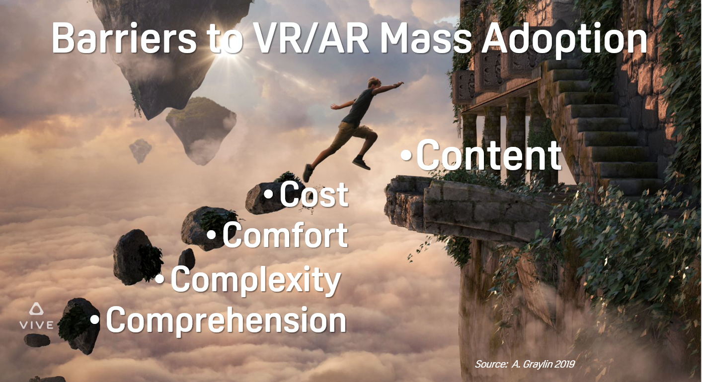

FAMILY FIRST CULTURE
Socializing and intermix is a key attraction for technology workers
Areas focused on catering to special needs such as elderly, children and handicapped
Software that encourages best practices for business today - especially for gig based work
Scheme for selecting local resources over remote, paying contractors quickly and without load
Split total and rank individual employee (and contractor) pay based on gender
Skills training and tasks so entry level contractors can climb
Local contract work market interacts and compliments remote contractors
Socializing and intermix is a key attraction for technology workers
Areas focused on catering to special needs such as elderly, children and handicapped
Software that encourages best practices for business today - especially for gig based work
Scheme for selecting local resources over remote, paying contractors quickly and without load
Split total and rank individual employee (and contractor) pay based on gender
Skills training and tasks so entry level contractors can climb
Local contract work market interacts and compliments remote contractors
Physical collaboration spaces for virtual, social and professional mixing
Female, family, elderly and handicap friendly; active security at all hours.
Service desk performing gender and location verification for identity card issue.
Software to highlight locations, queue for resources, find work and transfer money without loads.
Female, family, elderly and handicap friendly; active security at all hours.
Service desk performing gender and location verification for identity card issue.
Software to highlight locations, queue for resources, find work and transfer money without loads.
EMPLOY LOCAL FIRST
Flexible and benefitial working opportunities benefit people focused on raising families locally.
Attracting rising female talent to smaller markets and companies requires balancing income, lifestyle and stability.
Motivation for more than direct pay comes from people building opportunities for others in their local market.
Optional attendance in the physical workplace demands utility and comfort for maximum participation
Attracting rising female talent to smaller markets and companies requires balancing income, lifestyle and stability.
Motivation for more than direct pay comes from people building opportunities for others in their local market.
Optional attendance in the physical workplace demands utility and comfort for maximum participation
ATTRACT AND RETAIN TALENT
Team content is critical - only in jail are single gender teams standard
Family and local people learning, creating and advancing are rewards other then direct pay
Pay and stability are important, not just for the solo employee, but for the larger team and community
Flexibility in lifestyle and schedule to consume unforeseen opportunities and interests
Family and local people learning, creating and advancing are rewards other then direct pay
Pay and stability are important, not just for the solo employee, but for the larger team and community
Flexibility in lifestyle and schedule to consume unforeseen opportunities and interests
PROFESSIONAL ADVANCEMENT
Skills training needs to match the local opportunities
Environment to find and develop contacts
Personal guidance and influence missing from remote work
Experience mixing with youth renews the market techniques and processes
Opportunities, training, and personal collaboration
Environment to find and develop contacts
Personal guidance and influence missing from remote work
Experience mixing with youth renews the market techniques and processes
Opportunities, training, and personal collaboration
FEATURES
Mechanism to balance pay based on gender (split and rank)
Fast execution billing system tracks flows based gender and location
Certification allows display of the Delicious Culture® standards logo
Career stability backed with benefits and guaranteed salary pool
Productivity insured during life events with additional gig resources
Daycare, WiFi, per friendly and family spaces in market
Office for paying out wages and verifying local status of workers
Fast execution billing system tracks flows based gender and location
Certification allows display of the Delicious Culture® standards logo
Career stability backed with benefits and guaranteed salary pool
Productivity insured during life events with additional gig resources
Daycare, WiFi, per friendly and family spaces in market
Office for paying out wages and verifying local status of workers
CONTRACTOR MARKET
For skilled and reliable contractors - train and regularly compensate
Climb by combining training to go with new tasks
Tide over a lazy or free floating brain with a loan or scholarship
Technology companies don't compete on a local basis (in most cases)
Skilling up contract workers in your community doesn't help your competition
Climb by combining training to go with new tasks
Tide over a lazy or free floating brain with a loan or scholarship
Technology companies don't compete on a local basis (in most cases)
Skilling up contract workers in your community doesn't help your competition
CAMERAS AND ACTIVE MONITORING
Integration with law enforcement and other local services
High observability with human eyes and cameras
Employees, contractors and visitors are issued cards to monitor pariticpation
Security capable employee on duty available to escort people in and out of market
Software features allow remote request of security and to quickly report issues
High observability with human eyes and cameras
Employees, contractors and visitors are issued cards to monitor pariticpation
Security capable employee on duty available to escort people in and out of market
Software features allow remote request of security and to quickly report issues
ACCESSABLE AREAS AND MORE
Technology center featuring handicap friendly tech
Kid collaboration areas that lend to safe and entertaining interactions for kids
Adult only areas and Business only areas
Smoking area that is clean, dry and convenient
Alcohol and drugs are banned in sponsored locations (with limited exceptions)
Allow parents to determine how much their kids mix with which adults
Spaces for family members (or others) that need isolation for physical or mental issues
Acessable area is a designated part of market with locations concentrating on accesability
Highly accessable restroom and if possible a contract worker that can assist with special events
Create a privacy ability for accessable area so people that don't get out much can visit
Collaborate with local mission for homeless, especially during cold months
Kid collaboration areas that lend to safe and entertaining interactions for kids
Adult only areas and Business only areas
Smoking area that is clean, dry and convenient
Alcohol and drugs are banned in sponsored locations (with limited exceptions)
Allow parents to determine how much their kids mix with which adults
Spaces for family members (or others) that need isolation for physical or mental issues
Acessable area is a designated part of market with locations concentrating on accesability
Highly accessable restroom and if possible a contract worker that can assist with special events
Create a privacy ability for accessable area so people that don't get out much can visit
Collaborate with local mission for homeless, especially during cold months
SPONSORED SPACES AND SERVICES
Retail displays (clothes, etc) - display only (aka catalog store)
Locations have several tables for working at in the location (even without food and drinks)
Local retail selection is a valuable service and part of local culture
Locations use a webcam to scan cards/codes to track space usage (for funding - more visits more bucks)
Locations should be kid friendly in almost all cases
Designated spiritual area with prayer and other related facilities (churches can participate)
Purchase isn't required (scanning the card shows you've supported the space)
Locations can sell services or products - but can't require you to purchase to use the space
Market wide Wifi is free with many available spaces to use easy and quick
Locations cater to short stops (15min) without spending money
Software for local mission to provide gigs where possible to residents (mission gets a %)
Where possible enhanced training (personal and self driven) for low skill workers
Locations get a base fee for participating and bonus money for visits (ranked)
Optionally locations can be pet friendly. This is obviously difficult, but desired by many.
Flexible spaces are preferred to compress people and activity into a smaller area
Highly observed area so market participants can safely move location to location
Where possible the market pays one or more retains for quality legal and accounting services
Minimum two staff at all times, one occupies verification desk, one for escorts
Free flow, fast pace, and short or long stays in shops is preferred
Market supports keeping spaces flexible and funded for many purposes
Virtual appliance support via market software to enhance visitor experiences
Market encourages shop visits and participation over direct sales
Market wide ordering system with POS system provided for shops at their option
Locations have several tables for working at in the location (even without food and drinks)
Local retail selection is a valuable service and part of local culture
Locations use a webcam to scan cards/codes to track space usage (for funding - more visits more bucks)
Locations should be kid friendly in almost all cases
Designated spiritual area with prayer and other related facilities (churches can participate)
Purchase isn't required (scanning the card shows you've supported the space)
Locations can sell services or products - but can't require you to purchase to use the space
Market wide Wifi is free with many available spaces to use easy and quick
Locations cater to short stops (15min) without spending money
Software for local mission to provide gigs where possible to residents (mission gets a %)
Where possible enhanced training (personal and self driven) for low skill workers
Locations get a base fee for participating and bonus money for visits (ranked)
Optionally locations can be pet friendly. This is obviously difficult, but desired by many.
Flexible spaces are preferred to compress people and activity into a smaller area
Highly observed area so market participants can safely move location to location
Where possible the market pays one or more retains for quality legal and accounting services
Minimum two staff at all times, one occupies verification desk, one for escorts
Free flow, fast pace, and short or long stays in shops is preferred
Market supports keeping spaces flexible and funded for many purposes
Virtual appliance support via market software to enhance visitor experiences
Market encourages shop visits and participation over direct sales
Market wide ordering system with POS system provided for shops at their option
SPECIALIZE IN TECHNOLOGIES
Technology demonstration zones - geeks have toys and love to share and show and hand down
In order to renew resources - loads and fees are avoided - especially for workers no longer participating in iterations
In order to renew resources - loads and fees are avoided - especially for workers no longer participating in iterations
ENCHANCE LOCAL CASH FLOWS
Optimized payments certified employer to worker
The payment system is funded by the market, not loads and fees
Loads and fees will only be applied due external costs to the billing system
Quality billing, accounting, payroll services provided free and subsidized
All money paid out to contractors originates from developers
The payment system is funded by the market, not loads and fees
Loads and fees will only be applied due external costs to the billing system
Quality billing, accounting, payroll services provided free and subsidized
All money paid out to contractors originates from developers
MARKET GUIDELINES
Contractors inform employers of criminal and financial history to prevent conflicts
Skilled contractors keep companies relevant (and iterating) when employees are absent
Guidelines for contractors covering confidentiality, creditionals, invoicing on fixed price and hourly work
Market wide guidelines for conducting meetings and other regular business
Daycare expenses are covered for employees and contractors attending meetings
Contractors are informed of tax status of earnings and sign an agreement of understanding
Companies and contractors can include additional policy in the project agreements
Exceptions to regular policy are flagged and highlighted to ensure all parties are aware
Wether working in the market or remote, the spirit is personal level collaboration
Extensive onboarding for both contractors, employers and agencies
Library of market techniques with provided training and contractor history of usage
Techniques and documents hosted by the market include dates for creation and updates - techniques age and tools improve
Reserved white papers and training for contractors passing incoming levels
Male heavy companies entering market provide scholarships to female contractors offset the gender imbalance
Scholarships can be used promote meetups and other events for attendance
Market wide product search from sponsered locations and participating companies
Participating companies are required to use the included billing software to gender balance contractor payouts
Skilled contractors keep companies relevant (and iterating) when employees are absent
Guidelines for contractors covering confidentiality, creditionals, invoicing on fixed price and hourly work
Market wide guidelines for conducting meetings and other regular business
Daycare expenses are covered for employees and contractors attending meetings
Contractors are informed of tax status of earnings and sign an agreement of understanding
Companies and contractors can include additional policy in the project agreements
Exceptions to regular policy are flagged and highlighted to ensure all parties are aware
Wether working in the market or remote, the spirit is personal level collaboration
Extensive onboarding for both contractors, employers and agencies
Library of market techniques with provided training and contractor history of usage
Techniques and documents hosted by the market include dates for creation and updates - techniques age and tools improve
Reserved white papers and training for contractors passing incoming levels
Male heavy companies entering market provide scholarships to female contractors offset the gender imbalance
Scholarships can be used promote meetups and other events for attendance
Market wide product search from sponsered locations and participating companies
Participating companies are required to use the included billing software to gender balance contractor payouts
Tag payments and salaries for gender, location and performance
Deliver instant payments to local contractors with no load and minimum fees
Contractor matching enables balancing of gender based outflows
Automates invoicing, payment posting and regular business tasks
Technique education including scholarships, loans and progress tracking
Payments only originate from Delicious companies, containing nefarious risk
Deliver instant payments to local contractors with no load and minimum fees
Contractor matching enables balancing of gender based outflows
Automates invoicing, payment posting and regular business tasks
Technique education including scholarships, loans and progress tracking
Payments only originate from Delicious companies, containing nefarious risk
EMPLOYER FEATURES
Pre approve contractors for a task, task type or performance history (earnings, stars)
Submit tasks to the work queue for auto hire (optional)
Employers have option to hide most transaction details (pay rate, details)
Develop and share local skilled assets (contractors)
Submit tasks to the work queue for auto hire (optional)
Employers have option to hide most transaction details (pay rate, details)
Develop and share local skilled assets (contractors)
WIDGETS AND API
Widget provides an in editor plugin UI for creating, selecting and submitting complete work
Unity, atom, android studio, Visual Studio, Office 360, Google Docs, JIRA, Trello
Integrate easy to use timeclock feature (wiget and api)
Invoicing for hourly and fixed projects (key for sizing future work)
Show online, available and/or present in market status
API allows payments, task submission and billing integration
Unity, atom, android studio, Visual Studio, Office 360, Google Docs, JIRA, Trello
Integrate easy to use timeclock feature (wiget and api)
Invoicing for hourly and fixed projects (key for sizing future work)
Show online, available and/or present in market status
API allows payments, task submission and billing integration
WORK QUEUE AND HISTORY
Contractors can only have a couple tasks open at a time (spread out work)
Contractors can self serve tasks (where approved)
Product owner and team can all audit the per task and per contractor results
Quality is rated separate from compensation (time based - including fixed price)
Contractors are given the advantage in compensation for time spent over results
Employers are expected to pay for time, but also iterate to the results they need
Employer and contractor can agree to keep as many details private as possible
Loan/scholarship status on skills / debt age listed on contractors lfw
Graded local rating - 1 day, 3 days, 1 week, 1 month, 1 year, never
Contractors can self serve tasks (where approved)
Product owner and team can all audit the per task and per contractor results
Quality is rated separate from compensation (time based - including fixed price)
Contractors are given the advantage in compensation for time spent over results
Employers are expected to pay for time, but also iterate to the results they need
Employer and contractor can agree to keep as many details private as possible
Loan/scholarship status on skills / debt age listed on contractors lfw
Graded local rating - 1 day, 3 days, 1 week, 1 month, 1 year, never
COLLABORATION FEATURES
Agencies are supported for contractors that prefer a team - but not a company
Creditionals storage for companies (allows self serve access for contractors)
Tightly integrate existing project management systems (JIRA/trello/github, etc)
Option by employer or contractor to exclude from searches (all or a filter)
Employer contacting contractor can remain anonymous until otherwise
Employers and contractors specify how much personal/social interaction in their profiles
Tasks will be highly visible - the market isn't intended for devious tasks
Employers and contractors before and after a project can specify how much personal connection they prefer
Team members are able to transfer gig account balances amongst team members
Multiple news feeds for different purposes - social, event, work, employee only, contractor only
Creditionals storage for companies (allows self serve access for contractors)
Tightly integrate existing project management systems (JIRA/trello/github, etc)
Option by employer or contractor to exclude from searches (all or a filter)
Employer contacting contractor can remain anonymous until otherwise
Employers and contractors specify how much personal/social interaction in their profiles
Tasks will be highly visible - the market isn't intended for devious tasks
Employers and contractors before and after a project can specify how much personal connection they prefer
Team members are able to transfer gig account balances amongst team members
Multiple news feeds for different purposes - social, event, work, employee only, contractor only
CONTRACTOR FEATURES
Partial payments for work done - arbitration favors contractor paid for time spent
Contractors can sub out projects with no load to other contractors
Completed work is paid for quickly; immediate and accurate work is expected
Audit/tracing of results and hours worked for all parties
Learn from other experienced contractors (local)
Contractor can request (or employer) paid training to facilitate a task
Fixed price contracts are broken down into hours for gender pay rank tracking
Training is focused on current b/leading edge techniques used in the market
Training and complimentary tasks work for people with existing jobs to gain skills
Support to climb after a break from the industry, in skills, connections and routine
Failure forgiveness - mistakes happen - more chances keep people in the market
Training and task success noted on profile - failures age out
Training and tasks sized for various skill levels so contractors can climb
Bill payout with minimum fee (mailed checks) from earnings (LES, ALLO, etc)
Contractors can sub out projects with no load to other contractors
Completed work is paid for quickly; immediate and accurate work is expected
Audit/tracing of results and hours worked for all parties
Learn from other experienced contractors (local)
Contractor can request (or employer) paid training to facilitate a task
Fixed price contracts are broken down into hours for gender pay rank tracking
Training is focused on current b/leading edge techniques used in the market
Training and complimentary tasks work for people with existing jobs to gain skills
Support to climb after a break from the industry, in skills, connections and routine
Failure forgiveness - mistakes happen - more chances keep people in the market
Training and task success noted on profile - failures age out
Training and tasks sized for various skill levels so contractors can climb
Bill payout with minimum fee (mailed checks) from earnings (LES, ALLO, etc)
PAYOUTS AND PAYINS
No load local rent payments for contractors to qualified rentors
No load payments for child support, fines and select organizations (churches, etc)
Undocumented workers are able to verify local and receive pay (rent or cash)
Payments for completed work are ungated for verified local workers
Prepaid debit cards are available to people with no banking services
Gift Cards for local vendors with a 5% bonus value (as available)
Loads and fees are covered as possible from company premiums paid to market
No load payments for child support, fines and select organizations (churches, etc)
Undocumented workers are able to verify local and receive pay (rent or cash)
Payments for completed work are ungated for verified local workers
Prepaid debit cards are available to people with no banking services
Gift Cards for local vendors with a 5% bonus value (as available)
Loads and fees are covered as possible from company premiums paid to market
VOICE, XR AND AV FEATURES
Video, audio and VR content viewable and annotable
Comments and iteration friendly per task
3D / extended reality calendar to view gig gant chart etc
Digital (esp 3d / model / texture / scene) transfer
Link documents, works and contracts (3d/AV focus)
Avatar markup system for enabling specific changes
Integration with existing document and project mgmt systems
Anonymous contracts allow diverse people to collaborate
Shared virtual conference tools to visit work products
Comments and iteration friendly per task
3D / extended reality calendar to view gig gant chart etc
Digital (esp 3d / model / texture / scene) transfer
Link documents, works and contracts (3d/AV focus)
Avatar markup system for enabling specific changes
Integration with existing document and project mgmt systems
Anonymous contracts allow diverse people to collaborate
Shared virtual conference tools to visit work products
CONTRACTOR MARKET
Market based payment clearing house (payouts to people with identity trouble)
Technologies to be studyied could also be funded by outside sources, i.e.
Professional services are preferred but personal services are not excluded (i.e. daycare, car wash, etc)
Verified Local, Verified Female - actual physical location in market where somone can get certified (without id)
Matching system highlights gender and location to assist in gender balance of payouts
Credible non Delicious Companies can participate as in the market place under similar payout conditions
Local arbitrator and market managers to administer market policy
Remote contractors can be flagged as market friendly by companies
Unused weekly gig money dumps into scholarships and loan guarantee pool
Expiration of data (deletion) available for companies and contractors
Employees can take saboticals (1 month or more) to contract with other market companies
Market level comments, company level comments and contractor/employee level comments
Employers can mark specific skills for a contractor as weak or strong
Technologies to be studyied could also be funded by outside sources, i.e.
Professional services are preferred but personal services are not excluded (i.e. daycare, car wash, etc)
Verified Local, Verified Female - actual physical location in market where somone can get certified (without id)
Matching system highlights gender and location to assist in gender balance of payouts
Credible non Delicious Companies can participate as in the market place under similar payout conditions
Local arbitrator and market managers to administer market policy
Remote contractors can be flagged as market friendly by companies
Unused weekly gig money dumps into scholarships and loan guarantee pool
Expiration of data (deletion) available for companies and contractors
Employees can take saboticals (1 month or more) to contract with other market companies
Market level comments, company level comments and contractor/employee level comments
Employers can mark specific skills for a contractor as weak or strong
SCHEDULING AND AVAILABILITY
Employers can list future projects and related skills with a commitment level
Contractors can list current and future availability
Contractors status can be busy remote, available local, available, busy local
Contractors can indicate in status fulltime, parttime and/or permanent position preferred
Employers can tag jobs as 2 workers or more to facilitate gender balancing
Contractors can list current and future availability
Contractors status can be busy remote, available local, available, busy local
Contractors can indicate in status fulltime, parttime and/or permanent position preferred
Employers can tag jobs as 2 workers or more to facilitate gender balancing
LOANS AND SCHOLARSHIPS
Sponsors of loans and scholarships can remain anonymous (removing expectation of hiring)
Scholarships can apply to certain technologies and training
Contractors can request scholarships (no work or new skill) or employees recommend and/or fund
Trusted lenders are able to view personal, work and payment history on contractors
Employers can provide loans, scholarships and grants covering techniques for upcoming projects
Loans can be backed from the lender, employers or the market
Loans queue allows all lenders to request information, accept or pass (not reject) anonymously
Loan and grant performance history - were jobs taken for the skill after grants and loans, jobs at all?
Lenders and contractors can build borrowing history for personal loans (car, house or business opportunity)
Employers can flag (attribution optional) contractors for auto approve on loan and/or scholarship requests
Employers can mark contractors as favored (like) for advantage in loans and scholarships
Outside companies like Firebase, WebGL (GC companies), LUIS (MS) can sponsor
High demand and rare skills specializations are identified by market and provided scholarships
Scholarships can apply to certain technologies and training
Contractors can request scholarships (no work or new skill) or employees recommend and/or fund
Trusted lenders are able to view personal, work and payment history on contractors
Employers can provide loans, scholarships and grants covering techniques for upcoming projects
Loans can be backed from the lender, employers or the market
Loans queue allows all lenders to request information, accept or pass (not reject) anonymously
Loan and grant performance history - were jobs taken for the skill after grants and loans, jobs at all?
Lenders and contractors can build borrowing history for personal loans (car, house or business opportunity)
Employers can flag (attribution optional) contractors for auto approve on loan and/or scholarship requests
Employers can mark contractors as favored (like) for advantage in loans and scholarships
Outside companies like Firebase, WebGL (GC companies), LUIS (MS) can sponsor
High demand and rare skills specializations are identified by market and provided scholarships
MVP VERSUS PRODUCT TEAM
| MVP Team | Product Team | |
|---|---|---|
| Technology Expertise | Experience to select and implement the most effective technologies | Techniques to iterate product features. One developer should have be a principal stakeholder. |
| Product Knowledge | Should contain a principal and expert | Key focus to compete |
| Locality and Retention | Not important, probably too expensive to keep MVP developers | Long term employees gain high knowled of customers, market, product and new opportunies |
| Implementation | Fast pace, high quality and high cost | Features specific to market share over new techniques and pace with managed cost |
| Compensation | Most of team unlikely to stay, don't commit principal | rewards will be product success driven, retention and principal interest make sense here |
PRODUCT TEAM
originate with a quality “core base” (engine/code/product/app/branding/marketing).
avoid out of date workers that have little incentive to reskill and weight down the salary pool
provide ability to retire assets early (contract basis to start if possible)
get 2 "brains" on the team that cover knowledge across the product
Hiring of wives and husbands is ok - this is a solid option for existing companies to either meet or get a lot closer to the requirements for top management. Many well paid people of either sex have a supporting spouse.
avoid out of date workers that have little incentive to reskill and weight down the salary pool
provide ability to retire assets early (contract basis to start if possible)
get 2 "brains" on the team that cover knowledge across the product
Hiring of wives and husbands is ok - this is a solid option for existing companies to either meet or get a lot closer to the requirements for top management. Many well paid people of either sex have a supporting spouse.
PROCESS SCHEMING
core of process/technique is to remove “the requirement” of expert level talent at every point in the process
any piece of the regular process (adding features/content - building, releaseing, branding, etc etc) - should be regular tasks
high talent and skill should focus on features - not infastructure
Emerging talent should get "just the skills they need" and work on features and competing in a market place
new workers will receive the best pay by learning the newest/most in demand skills (not old programming languages/systems)
any piece of the regular process (adding features/content - building, releaseing, branding, etc etc) - should be regular tasks
high talent and skill should focus on features - not infastructure
Emerging talent should get "just the skills they need" and work on features and competing in a market place
new workers will receive the best pay by learning the newest/most in demand skills (not old programming languages/systems)
GENDER BALANCED TEAMS
Companies compete for talented women
ranked salaries will generate this demand
Encourages female participation at an early age in an exciting and challenging business
Co-ed teams retain better
Recruitment of talent - no entry level workers envision working on an all male team
Experience gained at an early age is very valuable to professionals of all genders
Brain time and perspective is more important than direct line count (especially with contracting)
ranked salaries will generate this demand
Encourages female participation at an early age in an exciting and challenging business
Co-ed teams retain better
Recruitment of talent - no entry level workers envision working on an all male team
Experience gained at an early age is very valuable to professionals of all genders
Brain time and perspective is more important than direct line count (especially with contracting)
DEVELOP PROFESSIONALS
Both: teach and collaborate on the newest and coolest techniques
Product Team: avoid paying people who leave before they are productive
Both: do work on a per project basis (even if salaried employee)
we only finish projects - if longer then a few months then a decent phase
barter in training and payback with each project
committed to helping talent acquire skills, at the same time, we’re committed to production
We pay what we can - but when something else pays a lot more, or has something cooler to do, lets make it smooth
We keep the projects and phases reasonable in length and you finish them
MVP creation phase should run 3-6 months (with 4-6 weeks of actual billable work).
production and support lifespan should run 5-10 years (competitive for features per iteration without a rewrite).
Product Team: avoid paying people who leave before they are productive
Both: do work on a per project basis (even if salaried employee)
we only finish projects - if longer then a few months then a decent phase
barter in training and payback with each project
committed to helping talent acquire skills, at the same time, we’re committed to production
We pay what we can - but when something else pays a lot more, or has something cooler to do, lets make it smooth
We keep the projects and phases reasonable in length and you finish them
MVP creation phase should run 3-6 months (with 4-6 weeks of actual billable work).
production and support lifespan should run 5-10 years (competitive for features per iteration without a rewrite).

Three to five year commitment between investor and product teams
Quality relationships valued over outcome product success
Entry level professionals need stability to raise families
Emerging technologies attact fresh talent
Quality relationships valued over outcome product success
Entry level professionals need stability to raise families
Emerging technologies attact fresh talent
APPLYING PRODUCT TO NEW TEAMS
Deck pitching agent, investor and product owner sekect Delicious
Applied as a load on entire investment in lieu of traditional office and benefits
Salaries flexible gender bucket on top of base pay used to level out pay per gender
Benefits and workplace is focused first on employees in addition to collaborating with contractors
Applied as a load on entire investment in lieu of traditional office and benefits
Salaries flexible gender bucket on top of base pay used to level out pay per gender
Benefits and workplace is focused first on employees in addition to collaborating with contractors
MARKET STABILITY
Goodwill mechanism built into pools to leave some value in the market
Successful companies can pay a bonus amount based on original premium to become a listed sponsor
The mechanisms to balance gender pay are adjusted as needed to match conditions
The insurancer’s risk and costs are contained using pools and an arbitrator
Risk exists in the premium reudctions for the life and health products
Families with children (single or married) are much less likely to migrate
The conditions moving forward will have one thing in common with the past
Underwritten on a per company basis - product defintion adjusted per market
Female ratios: min count: 40%, min total salaries: 40, rank per class salary: 90% class to class
Female heavy companies do not pay the males a premium from the gender bucket as is vice versa
Startup companies receiving investment have little to gain hiding salary levels
Companies in a specific market enter into a guaranty for salary insurance
Successful companies can pay a bonus amount based on original premium to become a listed sponsor
The mechanisms to balance gender pay are adjusted as needed to match conditions
The insurancer’s risk and costs are contained using pools and an arbitrator
Risk exists in the premium reudctions for the life and health products
Families with children (single or married) are much less likely to migrate
The conditions moving forward will have one thing in common with the past
Underwritten on a per company basis - product defintion adjusted per market
Female ratios: min count: 40%, min total salaries: 40, rank per class salary: 90% class to class
Female heavy companies do not pay the males a premium from the gender bucket as is vice versa
Startup companies receiving investment have little to gain hiding salary levels
Companies in a specific market enter into a guaranty for salary insurance
DESRIED PRODUCT VEHICLE
Formed with entry level engineers and product people from the MVP
MVP implemented with leading edge techniques and scaled architecture
Product is in growing/emerging market competing for customers with features
4-8 in size with contract resources making significant contributions
Firebase, Javascript and Virtual Reality technologies are preferred
The vehicle owner can be one or more corporations that use the product.
Where the core team is inexperienced contract resources can be used
Family and friends are welcome on teams, definitely promotes retention
A product where the team can produce industry noticable features for glory
The Delicious team resides in each market hosting and sponsoring key assets
Use of standardized architecture, platforms and techniques where possible
MVP implemented with leading edge techniques and scaled architecture
Product is in growing/emerging market competing for customers with features
4-8 in size with contract resources making significant contributions
Firebase, Javascript and Virtual Reality technologies are preferred
The vehicle owner can be one or more corporations that use the product.
Where the core team is inexperienced contract resources can be used
Family and friends are welcome on teams, definitely promotes retention
A product where the team can produce industry noticable features for glory
The Delicious team resides in each market hosting and sponsoring key assets
Use of standardized architecture, platforms and techniques where possible
INVESTOR CONSIDERATIONS
Contractors and employees of other companies are strong backups when critical departures occur
Soft shutdown with a team so they can keep the collaboration when the product isn't viable
Product/team receives investment for multiple years
MVP lead and key developers leaving as product iteration team is refilling
Entry level developers learning new techniques will be used to manage cost
Investors want to do "good" things - this is a "treat" the team well product
Gives the investor the ability/option to “seed” some corporate culture
The high cost represents the value of all parties to the endeaver
Worksite agent pitches and closes sale eaching commission based on premium sold
Keep vested interest in the product team; not in the agent or temporary mvp team
Options to sell the team if product is no longer viable
Laid off employees are the first option for similar positions in the market
Salary guaranty in effect until they find a similar job
Laid off employees are encouraged to contract in the market
All other pool benefits would remain for the 5 year period as possible
A functioning team is unlikley to be broken up in current market conditions
"Soft” tools for you, employees and contractors to collaborate
People aren’t going to work as much and for reasons other money alone
Employee package intended to balance risks of a startup versus a corporate position
Promotes hiring and advancing entry level talent verus hiring it away
No load payments keep workers from thinking about how to do transactions
Voice recognition, XR and Firebase experts on Delicious staff are able to sabotical and contract to other market participants
Soft shutdown with a team so they can keep the collaboration when the product isn't viable
Product/team receives investment for multiple years
MVP lead and key developers leaving as product iteration team is refilling
Entry level developers learning new techniques will be used to manage cost
Investors want to do "good" things - this is a "treat" the team well product
Gives the investor the ability/option to “seed” some corporate culture
The high cost represents the value of all parties to the endeaver
Worksite agent pitches and closes sale eaching commission based on premium sold
Keep vested interest in the product team; not in the agent or temporary mvp team
Options to sell the team if product is no longer viable
Laid off employees are the first option for similar positions in the market
Salary guaranty in effect until they find a similar job
Laid off employees are encouraged to contract in the market
All other pool benefits would remain for the 5 year period as possible
A functioning team is unlikley to be broken up in current market conditions
"Soft” tools for you, employees and contractors to collaborate
People aren’t going to work as much and for reasons other money alone
Employee package intended to balance risks of a startup versus a corporate position
Promotes hiring and advancing entry level talent verus hiring it away
No load payments keep workers from thinking about how to do transactions
Voice recognition, XR and Firebase experts on Delicious staff are able to sabotical and contract to other market participants
BENEFIT POOLS
Benefits support employees freshly leaving college ready to start families
Family and other event driven payouts to suppliment productivity with contractors
Contractor benefits offered from third party providers
Daycare is provided by pooled resources
Loads and fees for contractor work are covered by the premium
Collaborate with class and talent over a cheaper remote team
Family and other event driven payouts to suppliment productivity with contractors
Contractor benefits offered from third party providers
Daycare is provided by pooled resources
Loads and fees for contractor work are covered by the premium
Collaborate with class and talent over a cheaper remote team
EMPLOYEE BENEFITS
Shared benefit pool to reduce costs
Living benefits (critical illness, long term care, disability income)
Money purchase level costs per employee (per gender)
Benefits cover lost team contributions in addition to personal expenses
Focus is on a coverage period of 5 years of benefits
Left over pool funds are paid out to employees after coverage period
20% or more of their weekly salary in buckets for gig spending
Living benefits (critical illness, long term care, disability income)
Money purchase level costs per employee (per gender)
Benefits cover lost team contributions in addition to personal expenses
Focus is on a coverage period of 5 years of benefits
Left over pool funds are paid out to employees after coverage period
20% or more of their weekly salary in buckets for gig spending
CONTRACTOR BENEFITS
Three months with 3k earnings qualify products with easy enrollment
Auto pay from pay account
Loans (contractor option) can kick in to keep benefits in force
Insurance products offered from 3rd party insurers
Auto pay from pay account
Loans (contractor option) can kick in to keep benefits in force
Insurance products offered from 3rd party insurers
DAYCARE BENEFITS
Spot daycare is provided and available spaces reserved in software
Onsite or near by supplimented (if not totally free) daycare most hours
Family friendly areas during all hours
Market pools resources and facilities to reduce cost
Onsite or near by supplimented (if not totally free) daycare most hours
Family friendly areas during all hours
Market pools resources and facilities to reduce cost